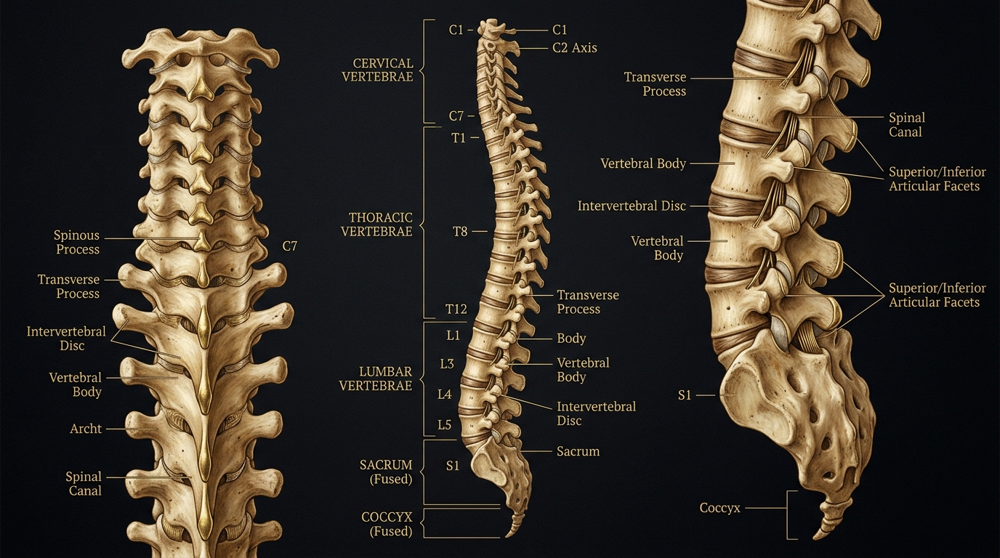

Dr. Charles Passler, DC — chiropractor, nutritionist, and the practitioner trusted by fashion's most discerning names.
As seen in
The Practice
Wellness is not a programme.
It is the environment your cells need to do their job.
Dr. Passler holds a Doctorate of Chiropractic and has spent over two decades at the intersection of clinical nutrition and peak performance. His practice does not treat symptoms. It addresses the conditions under which the human body either thrives or declines.
His approach integrates chiropractic care, functional testing, detoxification, biofeedback, and proprietary nutrition protocols — including the Pure Change cellular reset program — into a single, continuous practice philosophy.
Located at the center of Manhattan, he works with a small, selective clientele that includes some of the most recognised figures in fashion, arts, and media.
Dr. Charles Passler, DC — New York

Clinical Services
01
Protocols designed at the cellular level. Functional testing, targeted supplementation, and dietary guidance calibrated to your individual metabolic profile.
02
Structured reset programmes — including chelation of heavy metals, lymphatic drainage, and the Pure Change 7 and 21-day cellular detox protocols.
03
Applied kinesiology and structural correction to restore neurological balance, improve mobility, and address the musculoskeletal roots of systemic dysfunction.
04
Cranial electrical stimulation, sound and light therapy, and cardiac health evaluation — the tools of precision nervous system regulation.
05
ARX adaptive resistance, CAR.O.L. 40-second HIIT, and Vasper 21-minute metabolic acceleration. The most time-efficient performance technology available.
06
Comprehensive food sensitivity panels and metabolic rate assessment, forming the diagnostic foundation of every nutrition protocol.
Pure Change
$199.95
The foundational cellular detox. Seven days of structured nutrition, supplementation, and guidance — designed not as a diet but as a reset of the internal environment your cells operate within.
$299.95
The complete protocol. Three weeks of cellular recalibration, habit architecture, and nutritional precision — the programme trusted by models, designers, and editors before their most demanding seasons.
Initial appointments are limited. Dr. Passler works with a small number of clients at any time to maintain the depth of attention each case demands.
25 Central Park West — New York — By appointment only